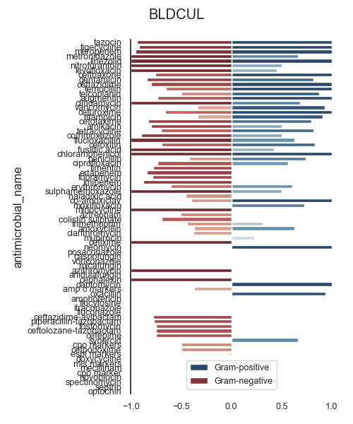
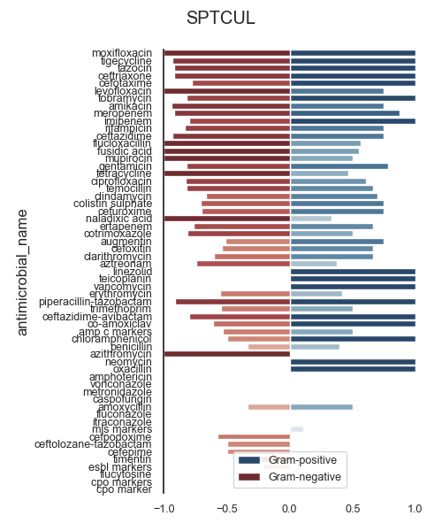
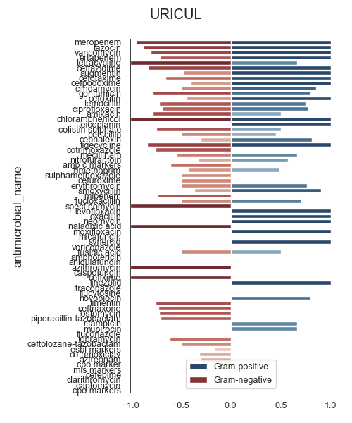
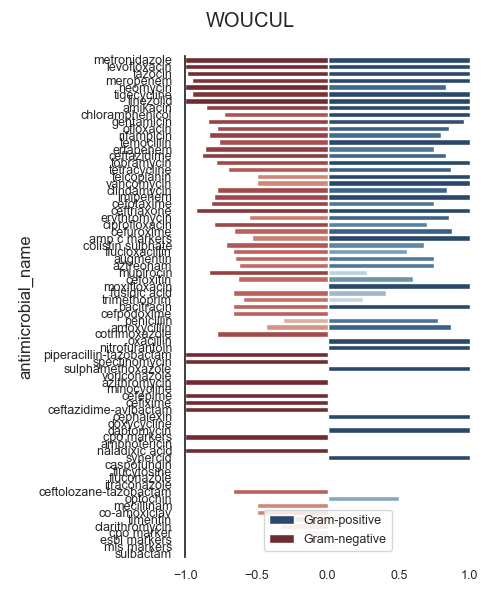
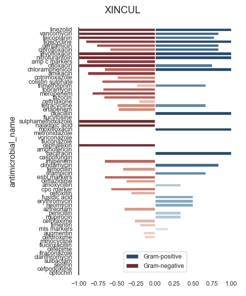

Note
Click here to download the full example code
SART - Spectrum (gram type)
- 
- 
- 
- 
- 
Out:
SARI (overall):
sensitivity fix hide highly resistant intermediate not done resistant sensitive freq sari
specimen_code microorganism_name antimicrobial_name
BLDCUL abiotrophia clindamycin 0.0 0.0 0.0 0.0 0.0 0.0 1.0 1.0 0.0
erythromycin 0.0 0.0 0.0 0.0 0.0 1.0 0.0 1.0 1.0
penicillin 0.0 0.0 0.0 0.0 0.0 0.0 1.0 1.0 0.0
teicoplanin 0.0 0.0 0.0 0.0 0.0 1.0 0.0 1.0 1.0
vancomycin 0.0 0.0 0.0 0.0 0.0 0.0 1.0 1.0 0.0
... ... ... ... ... ... ... ... ... ...
XINCUL yeasts gentamicin 0.0 0.0 0.0 0.0 0.0 0.0 1.0 1.0 0.0
linezolid 0.0 0.0 0.0 0.0 0.0 0.0 1.0 1.0 0.0
teicoplanin 0.0 0.0 0.0 0.0 0.0 0.0 1.0 1.0 0.0
tetracycline 0.0 0.0 0.0 0.0 0.0 1.0 0.0 1.0 1.0
vancomycin 0.0 0.0 0.0 0.0 0.0 0.0 1.0 1.0 0.0
[12012 rows x 9 columns]
c:\users\kelda\desktop\repositories\github\pyamr\main\pyamr\core\asai.py:527: UserWarning:
Extreme resistances were found in the DataFrame. These rows
should be reviewed since these resistances might correspond
to pairs with low number of records.
c:\users\kelda\desktop\repositories\github\pyamr\main\pyamr\core\asai.py:538: UserWarning:
There are NULL values in columns that are required. These
rows will be ignored to safely compute ASAI. Please review
the DataFrame and address this inconsistencies. See below
for more information:
specimen_code 0
antimicrobial_name 0
gram_stain 0
GENUS 0
SPECIE 3594
RESISTANCE 169
ASAI (overall):
N_GENUS N_SPECIE ASAI_SCORE width gmean
gram_stain n p u n p u n p u
specimen_code antimicrobial_name
BLDCUL amikacin 30.0 2.0 6.0 53.0 2.0 10.0 0.8000 0.5000 0.8333 2.1333 0.5774
amoxycillin 32.0 10.0 6.0 56.0 26.0 11.0 0.3693 0.6300 0.0952 1.0945 0.1488
amp c markers 19.0 1.0 4.0 27.0 1.0 6.0 0.3684 0.0000 0.6250 0.9934 0.0000
amphotericin NaN NaN 2.0 NaN NaN 8.0 NaN NaN 0.9286 0.9286 0.9636
anidulafungin NaN NaN 1.0 NaN NaN 2.0 NaN NaN 1.0000 1.0000 1.0000
... ... ... ... ... ... ... ... ... ... ... ...
XINCUL timentin 5.0 NaN NaN 5.0 NaN NaN 0.2000 NaN NaN 0.2000 0.4472
tobramycin 11.0 NaN 4.0 19.0 NaN 6.0 0.6818 NaN 0.6250 1.3068 0.6528
trimethoprim 11.0 3.0 4.0 17.0 4.0 4.0 0.2424 0.6667 0.5000 1.4091 0.2843
vancomycin 1.0 4.0 2.0 1.0 11.0 2.0 1.0000 0.8333 1.0000 2.8333 0.9129
voriconazole NaN NaN 1.0 NaN NaN 2.0 NaN NaN 1.0000 1.0000 1.0000
[339 rows x 11 columns]
ASAI (BLDCUL)
specimen_code antimicrobial_name N_GENUS N_SPECIE ASAI_SCORE width gmean
gram_stain n p u n p u n p u
66 BLDCUL tazocin 35.0 3.0 6.0 58.0 3.0 8.0 0.9419 1.0000 1.0 2.9419 0.9705
70 BLDCUL tigecycline 28.0 4.0 4.0 48.0 8.0 7.0 0.9196 1.0000 1.0 2.9196 0.9590
45 BLDCUL meropenem 36.0 2.0 5.0 59.0 2.0 7.0 0.9528 1.0000 0.8 2.7528 0.8731
46 BLDCUL metronidazole 4.0 3.0 3.0 7.0 4.0 5.0 1.0000 0.6667 1.0 2.6667 0.8165
43 BLDCUL linezolid 3.0 8.0 2.0 3.0 24.0 7.0 1.0000 1.0000 0.5 2.5000 0.7071
.. ... ... ... ... ... ... ... ... ... ... ... ... ...
27 BLDCUL cpo marker 3.0 NaN NaN 3.0 NaN NaN 0.0000 NaN NaN 0.0000 0.0000
55 BLDCUL novobiocin NaN 1.0 NaN NaN 2.0 NaN NaN 0.0000 NaN 0.0000 0.0000
63 BLDCUL spectinomycin 1.0 NaN NaN 1.0 NaN NaN 0.0000 NaN NaN 0.0000 0.0000
62 BLDCUL septrin 1.0 NaN NaN 1.0 NaN NaN 0.0000 NaN NaN 0.0000 0.0000
56 BLDCUL optochin NaN 1.0 NaN NaN 2.0 NaN NaN 0.0000 NaN 0.0000 0.0000
[76 rows x 13 columns]
ASAI (SPTCUL)
specimen_code antimicrobial_name N_GENUS N_SPECIE ASAI_SCORE width gmean
gram_stain n p u n p u n p u
117 SPTCUL moxifloxacin 1.0 2.0 1.0 1.0 3.0 1.0 1.0000 1.0000 1.0000 3.0000 1.0000
129 SPTCUL tigecycline 17.0 4.0 9.0 30.0 5.0 9.0 0.9294 1.0000 1.0000 2.9294 0.9641
125 SPTCUL tazocin 19.0 4.0 9.0 37.0 5.0 10.0 0.9211 1.0000 1.0000 2.9211 0.9597
91 SPTCUL ceftriaxone 12.0 3.0 3.0 18.0 4.0 2.0 0.9167 1.0000 1.0000 2.9167 0.9574
85 SPTCUL cefotaxime 20.0 4.0 9.0 36.0 4.0 9.0 0.7800 1.0000 1.0000 2.7800 0.8832
112 SPTCUL levofloxacin 4.0 2.0 2.0 7.0 3.0 2.0 1.0000 0.7500 1.0000 2.7500 0.8660
131 SPTCUL tobramycin 17.0 4.0 9.0 34.0 5.0 9.0 0.8235 1.0000 0.8889 2.7124 0.8556
76 SPTCUL amikacin 17.0 4.0 9.0 35.0 5.0 9.0 0.9412 0.7500 1.0000 2.6912 0.8402
114 SPTCUL meropenem 19.0 4.0 9.0 37.0 5.0 9.0 0.9211 0.8750 0.8889 2.6849 0.8464
110 SPTCUL imipenem 10.0 3.0 6.0 16.0 4.0 7.0 0.8000 1.0000 0.8333 2.6333 0.8165
124 SPTCUL rifampicin 3.0 5.0 3.0 4.0 9.0 4.0 0.8333 0.7500 1.0000 2.5833 0.7906
88 SPTCUL ceftazidime 17.0 4.0 9.0 34.0 5.0 10.0 0.9294 0.7500 0.8889 2.5683 0.7872
105 SPTCUL flucloxacillin 2.0 4.0 3.0 2.0 8.0 4.0 1.0000 0.5625 1.0000 2.5625 0.7500
108 SPTCUL fusidic acid 2.0 5.0 3.0 2.0 9.0 4.0 1.0000 0.5500 1.0000 2.5500 0.7416
118 SPTCUL mupirocin 2.0 4.0 3.0 2.0 8.0 4.0 1.0000 0.5000 1.0000 2.5000 0.7071
109 SPTCUL gentamicin 17.0 8.0 9.0 35.0 14.0 10.0 0.8235 0.7812 0.8889 2.4937 0.7562
128 SPTCUL tetracycline 7.0 6.0 3.0 12.0 23.0 4.0 1.0000 0.4643 1.0000 2.4643 0.6814
94 SPTCUL ciprofloxacin 20.0 7.0 9.0 41.0 11.0 10.0 0.8250 0.6071 1.0000 2.4321 0.7077
127 SPTCUL temocillin 17.0 3.0 9.0 30.0 3.0 10.0 0.8235 0.6667 0.8889 2.3791 0.6986
96 SPTCUL clindamycin 3.0 5.0 3.0 3.0 20.0 4.0 0.6667 0.7000 1.0000 2.3667 0.6831
98 SPTCUL colistin sulphate 17.0 4.0 9.0 33.0 5.0 9.0 0.7059 0.7500 0.8889 2.3448 0.6860
92 SPTCUL cefuroxime 20.0 4.0 9.0 38.0 6.0 10.0 0.6983 0.7500 0.8889 2.3372 0.6823
119 SPTCUL naladixic acid 5.0 1.0 2.0 11.0 3.0 3.0 1.0000 0.3333 1.0000 2.3333 0.5774
102 SPTCUL ertapenem 18.0 3.0 9.0 31.0 3.0 10.0 0.7667 0.6667 0.8889 2.3222 0.6740
99 SPTCUL cotrimoxazole 16.0 2.0 4.0 22.0 2.0 4.0 0.8125 0.5000 1.0000 2.3125 0.6374
80 SPTCUL augmentin 20.0 4.0 9.0 38.0 6.0 10.0 0.5100 0.7500 0.8889 2.1489 0.5831
86 SPTCUL cefoxitin 17.0 3.0 9.0 30.0 3.0 10.0 0.5412 0.6667 0.8889 2.0967 0.5663
95 SPTCUL clarithromycin 5.0 1.0 2.0 9.0 3.0 3.0 0.6000 0.6667 0.7500 2.0167 0.5477
82 SPTCUL aztreonam 17.0 4.0 9.0 34.0 5.0 9.0 0.7451 0.3750 0.8889 2.0090 0.4984
113 SPTCUL linezolid NaN 5.0 1.0 NaN 8.0 1.0 NaN 1.0000 1.0000 2.0000 1.0000
126 SPTCUL teicoplanin NaN 3.0 2.0 NaN 16.0 2.0 NaN 1.0000 1.0000 2.0000 1.0000
133 SPTCUL vancomycin NaN 6.0 2.0 NaN 20.0 2.0 NaN 1.0000 1.0000 2.0000 1.0000
103 SPTCUL erythromycin 6.0 5.0 3.0 9.0 20.0 4.0 0.5556 0.4192 1.0000 1.9748 0.4826
123 SPTCUL piperacillin-tazobactam 11.0 1.0 NaN 17.0 1.0 NaN 0.9091 1.0000 NaN 1.9091 0.9535
132 SPTCUL trimethoprim 17.0 7.0 9.0 30.0 11.0 10.0 0.5490 0.5000 0.8333 1.8824 0.4783
89 SPTCUL ceftazidime-avibactam 10.0 1.0 NaN 13.0 1.0 NaN 0.8000 1.0000 NaN 1.8000 0.8944
97 SPTCUL co-amoxiclav 12.0 1.0 NaN 19.0 1.0 NaN 0.6111 1.0000 NaN 1.6111 0.7817
78 SPTCUL amp c markers 16.0 2.0 8.0 26.0 2.0 7.0 0.5292 0.5000 0.5000 1.5292 0.3637
93 SPTCUL chloramphenicol 2.0 3.0 NaN 3.0 3.0 NaN 0.5000 1.0000 NaN 1.5000 0.7071
122 SPTCUL penicillin 6.0 5.0 3.0 7.0 20.0 4.0 0.3333 0.4000 0.3333 1.0667 0.2108
81 SPTCUL azithromycin 1.0 1.0 NaN 1.0 1.0 NaN 1.0000 0.0000 NaN 1.0000 0.0000
120 SPTCUL neomycin NaN 2.0 NaN NaN 2.0 NaN NaN 1.0000 NaN 1.0000 1.0000
121 SPTCUL oxacillin NaN 2.0 NaN NaN 2.0 NaN NaN 1.0000 NaN 1.0000 1.0000
79 SPTCUL amphotericin NaN NaN 2.0 NaN NaN 6.0 NaN NaN 1.0000 1.0000 1.0000
134 SPTCUL voriconazole NaN NaN 2.0 NaN NaN 6.0 NaN NaN 1.0000 1.0000 1.0000
115 SPTCUL metronidazole NaN NaN 2.0 NaN NaN 2.0 NaN NaN 1.0000 1.0000 1.0000
83 SPTCUL caspofungin NaN NaN 2.0 NaN NaN 6.0 NaN NaN 1.0000 1.0000 1.0000
77 SPTCUL amoxycillin 20.0 5.0 9.0 36.0 8.0 10.0 0.3350 0.5000 0.1111 0.9461 0.1364
106 SPTCUL fluconazole NaN NaN 2.0 NaN NaN 6.0 NaN NaN 0.9000 0.9000 0.9487
111 SPTCUL itraconazole NaN NaN 2.0 NaN NaN 6.0 NaN NaN 0.8000 0.8000 0.8944
116 SPTCUL mls markers NaN 5.0 3.0 NaN 16.0 4.0 NaN 0.1067 0.5000 0.6067 0.2309
87 SPTCUL cefpodoxime 7.0 NaN NaN 7.0 NaN NaN 0.5714 NaN NaN 0.5714 0.7559
90 SPTCUL ceftolozane-tazobactam 2.0 NaN NaN 2.0 NaN NaN 0.5000 NaN NaN 0.5000 0.7071
84 SPTCUL cefepime 3.0 NaN NaN 4.0 NaN NaN 0.5000 NaN NaN 0.5000 0.7071
130 SPTCUL timentin 7.0 NaN NaN 7.0 NaN NaN 0.4286 NaN NaN 0.4286 0.6547
104 SPTCUL esbl markers 14.0 1.0 8.0 24.0 1.0 7.0 0.2143 0.0000 0.1250 0.3393 0.0000
107 SPTCUL flucytosine NaN NaN 2.0 NaN NaN 6.0 NaN NaN 0.3000 0.3000 0.5477
101 SPTCUL cpo markers 1.0 NaN NaN 1.0 NaN NaN 0.0000 NaN NaN 0.0000 0.0000
100 SPTCUL cpo marker 6.0 1.0 1.0 8.0 1.0 1.0 0.0000 0.0000 0.0000 0.0000 0.0000
ASAI (URICUL)
specimen_code antimicrobial_name N_GENUS N_SPECIE ASAI_SCORE width gmean
gram_stain n p u n p u n p u
178 URICUL meropenem 19.0 4.0 3.0 34.0 4.0 3.0 0.9474 1.0000 1.0 2.9474 0.9733
194 URICUL tazocin 18.0 3.0 4.0 33.0 3.0 4.0 0.8750 1.0000 1.0 2.8750 0.9354
202 URICUL vancomycin 5.0 4.0 2.0 5.0 21.0 2.0 0.8000 1.0000 1.0 2.8000 0.8944
164 URICUL ertapenem 17.0 4.0 3.0 30.0 4.0 3.0 0.7059 1.0000 1.0 2.7059 0.8402
197 URICUL tetracycline 3.0 7.0 1.0 3.0 24.0 1.0 1.0000 0.6667 1.0 2.6667 0.8165
.. ... ... ... ... ... ... ... ... ... ... ... ... ...
180 URICUL mls markers NaN 3.0 NaN NaN 15.0 NaN NaN 0.1407 NaN 0.1407 0.3752
144 URICUL cefepime 3.0 NaN NaN 3.0 NaN NaN 0.0000 NaN NaN 0.0000 0.0000
156 URICUL clarithromycin 1.0 NaN NaN 1.0 NaN NaN 0.0000 NaN NaN 0.0000 0.0000
163 URICUL daptomycin NaN 1.0 NaN NaN 1.0 NaN NaN 0.0000 NaN 0.0000 0.0000
162 URICUL cpo markers 3.0 NaN NaN 3.0 NaN NaN 0.0000 NaN NaN 0.0000 0.0000
[69 rows x 13 columns]
ASAI (WOUCUL)
specimen_code antimicrobial_name N_GENUS N_SPECIE ASAI_SCORE width gmean
gram_stain n p u n p u n p u
249 WOUCUL metronidazole 6.0 4.0 8.0 8.0 8.0 16.0 1.0000 1.0000 1.0 3.0000 1.0000
245 WOUCUL levofloxacin 3.0 2.0 1.0 3.0 4.0 1.0 1.0000 1.0000 1.0 3.0000 1.0000
267 WOUCUL tazocin 25.0 6.0 7.0 48.0 10.0 11.0 0.9900 1.0000 1.0 2.9900 0.9950
248 WOUCUL meropenem 24.0 6.0 7.0 46.0 8.0 9.0 0.9514 1.0000 1.0 2.9514 0.9754
255 WOUCUL neomycin 8.0 3.0 2.0 10.0 9.0 2.0 1.0000 0.8333 1.0 2.8333 0.9129
.. ... ... ... ... ... ... ... ... ... ... ... ... ...
226 WOUCUL clarithromycin 4.0 NaN 1.0 6.0 NaN 1.0 0.3333 NaN 0.0 0.3333 0.0000
231 WOUCUL cpo marker 6.0 NaN NaN 7.0 NaN NaN 0.1667 NaN NaN 0.1667 0.4082
237 WOUCUL esbl markers 13.0 2.0 5.0 27.0 2.0 4.0 0.1474 0.0000 0.0 0.1474 0.0000
251 WOUCUL mls markers 3.0 8.0 8.0 3.0 30.0 11.0 0.0000 0.0688 0.0 0.0688 0.0000
264 WOUCUL sulbactam 1.0 NaN NaN 1.0 NaN NaN 0.0000 NaN NaN 0.0000 0.0000
[73 rows x 13 columns]
ASAI (XINCUL)
specimen_code antimicrobial_name N_GENUS N_SPECIE ASAI_SCORE width gmean
gram_stain n p u n p u n p u
311 XINCUL linezolid 1.0 2.0 2.0 1.0 5.0 2.0 1.0000 1.0000 1.00 3.0000 1.0000
337 XINCUL vancomycin 1.0 4.0 2.0 1.0 11.0 2.0 1.0000 0.8333 1.00 2.8333 0.9129
330 XINCUL teicoplanin 1.0 3.0 2.0 1.0 9.0 3.0 1.0000 0.7778 0.75 2.5278 0.7638
333 XINCUL tigecycline 11.0 1.0 4.0 17.0 3.0 5.0 0.9091 1.0000 0.50 2.4091 0.6742
307 XINCUL gentamicin 12.0 4.0 5.0 22.0 7.0 8.0 0.7708 0.8333 0.72 2.3242 0.6801
.. ... ... ... ... ... ... ... ... ... ... ... ... ...
295 XINCUL clarithromycin 1.0 NaN NaN 1.0 NaN NaN 0.0000 NaN NaN 0.0000 0.0000
327 XINCUL sulbactam 1.0 NaN NaN 1.0 NaN NaN 0.0000 NaN NaN 0.0000 0.0000
326 XINCUL septrin 1.0 NaN NaN 1.0 NaN NaN 0.0000 NaN NaN 0.0000 0.0000
288 XINCUL cefpodoxime 4.0 NaN NaN 4.0 NaN NaN 0.0000 NaN NaN 0.0000 0.0000
322 XINCUL optochin NaN 1.0 NaN NaN 1.0 NaN NaN 0.0000 NaN 0.0000 0.0000
[62 rows x 13 columns]
8 import sys
9 import glob
10 import numpy as np
11 import pandas as pd
12 import seaborn as sns
13 import matplotlib as mpl
14 import matplotlib.pyplot as plt
15
16 # Import specific libraries
17 from pyamr.core.sari import SARI
18 from pyamr.core.asai import ASAI
19 from pyamr.datasets.load import load_data_nhs
20 from pyamr.datasets.registries import MicroorganismRegistry
21 from pyamr.utils.plot import scalar_colormap
22
23 # Configure seaborn style (context=talk)
24 sns.set(style="white")
25
26 # Set matplotlib
27 mpl.rcParams['xtick.labelsize'] = 9
28 mpl.rcParams['ytick.labelsize'] = 9
29 mpl.rcParams['axes.titlesize'] = 11
30 mpl.rcParams['legend.fontsize'] = 9
31
32 # Pandas configuration
33 pd.set_option('display.max_colwidth', 40)
34 pd.set_option('display.width', 300)
35 pd.set_option('display.precision', 4)
36
37 # Numpy configuration
38 np.set_printoptions(precision=2)
39
40 # --------------------------------------------------------------------
41 # Main
42 # --------------------------------------------------------------------
43 # Load data
44 data, antibiotics, organisms = load_data_nhs()
45
46 # Count records per specimen code
47 specimen_code_count = data \
48 .specimen_code.value_counts(normalize=True) \
49 .sort_values(ascending=False)
50
51 # Filter most frequent specimens
52 data = data[data.specimen_code.isin( \
53 specimen_code_count.index.values[:5])]
54
55 # -------------------
56 # Compute SARI
57 # -------------------
58 # Create sari instance
59 sari = SARI(groupby=['specimen_code',
60 'microorganism_name',
61 'antimicrobial_name',
62 'sensitivity'])
63
64 # Compute SARI overall
65 sari_overall = sari.compute(data,
66 return_frequencies=True)
67
68 # Show
69 print("SARI (overall):")
70 print(sari_overall)
71
72 # ------------------------------
73 # Include registry information
74 # ------------------------------
75 # Load registry
76 mreg = MicroorganismRegistry()
77
78 # Format sari dataframe
79 dataframe = sari_overall.copy(deep=True)
80 dataframe = dataframe.reset_index()
81
82 # Create genus and species
83 dataframe[['genus', 'species']] = \
84 dataframe.microorganism_name \
85 .str.capitalize() \
86 .str.split(expand=True, n=1)
87
88 # Combine with registry information
89 dataframe = mreg.combine(dataframe)
90
91 # Fill missing gram stain
92 dataframe.gram_stain = dataframe.gram_stain.fillna('u')
93
94 # -------------------------------
95 # Compute ASAI
96 # -------------------------------
97 # Create asai instance
98 asai = ASAI(column_genus='genus',
99 column_specie='species',
100 column_resistance='sari',
101 column_frequency='freq')
102
103 # Compute
104 scores = asai.compute(dataframe,
105 groupby=['specimen_code',
106 'antimicrobial_name',
107 'gram_stain'],
108 weights='uniform',
109 threshold=0.5,
110 min_freq=0)
111
112 # Stack
113 scores = scores.unstack()
114
115 # .. note: In order to sort the scores we need to compute metrics
116 # that combine the different subcategories (e.g. gram-negative
117 # and gram-positive). Two possible options are: (i) use the
118 # gmean or (ii) the width.
119 # Measures
120 scores['width'] = np.abs(scores['ASAI_SCORE'].sum(axis=1))
121 scores['gmean'] = np.sqrt(scores['ASAI_SCORE'].product(axis=1))
122
123 # Show
124 print("\nASAI (overall):")
125 print(scores)
126
127
128 # -------------------------------------------
129 # Plot
130 # -------------------------------------------
131 # Reset
132 scores = scores.reset_index()
133
134 # Loop
135 for specimen, df in scores.groupby(by='specimen_code'):
136
137 # Sort
138 df = df.sort_values(by='width', ascending=False)
139
140 # Show
141 print("\n\nASAI (%s)" % specimen)
142 print(df)
143
144 # Variables to plot.
145 x = df.antimicrobial_name
146 y_n = df['ASAI_SCORE']['n'].values
147 y_p = df['ASAI_SCORE']['p'].values
148
149 # Constants
150 colormap_p = scalar_colormap(y_p, cmap='Blues', vmin=-0.1, vmax=1.1)
151 colormap_n = scalar_colormap(y_n, cmap='Reds', vmin=-0.1, vmax=1.1)
152
153 # ----------
154 # Example
155 # ----------
156 # This example shows an stacked figure using more than two categories.
157 # For instance, it uses gram-positive, gram-negative and gram-unknown.
158 # All the indexes go within the range [0,1].
159 # Create figure
160 f, ax = plt.subplots(1, 1, figsize=(5, 6))
161
162 # Plot
163 sns.barplot(x=y_p, y=x, palette=colormap_p, ax=ax, orient='h',
164 saturation=0.5, label='Gram-positive')
165 sns.barplot(x=-y_n, y=x, palette=colormap_n, ax=ax, orient='h',
166 saturation=0.5, label='Gram-negative')
167
168 # Configure
169 sns.despine(bottom=True)
170
171 # Format figure
172 plt.subplots_adjust(wspace=0.0, hspace=0.0)
173
174 # Set x-axis
175 ax.set_xlim([-1, 1])
176
177 # Adjust
178 plt.legend(loc=8)
179 plt.suptitle(specimen)
180 plt.tight_layout()
181
182 # Show
183 plt.show()
Total running time of the script: ( 0 minutes 18.088 seconds)